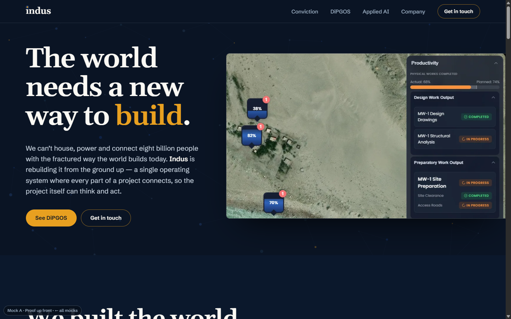
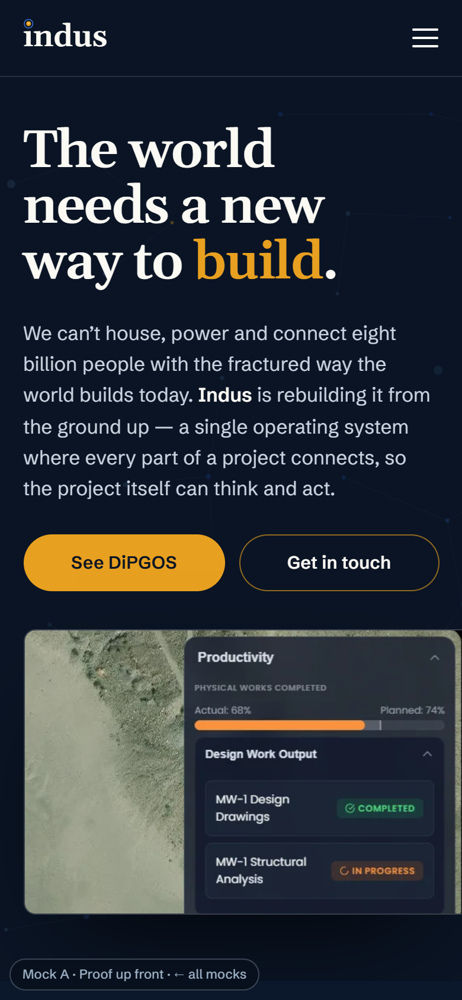
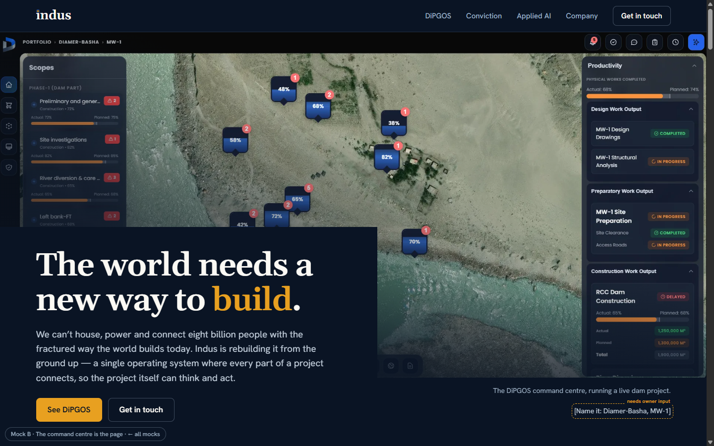
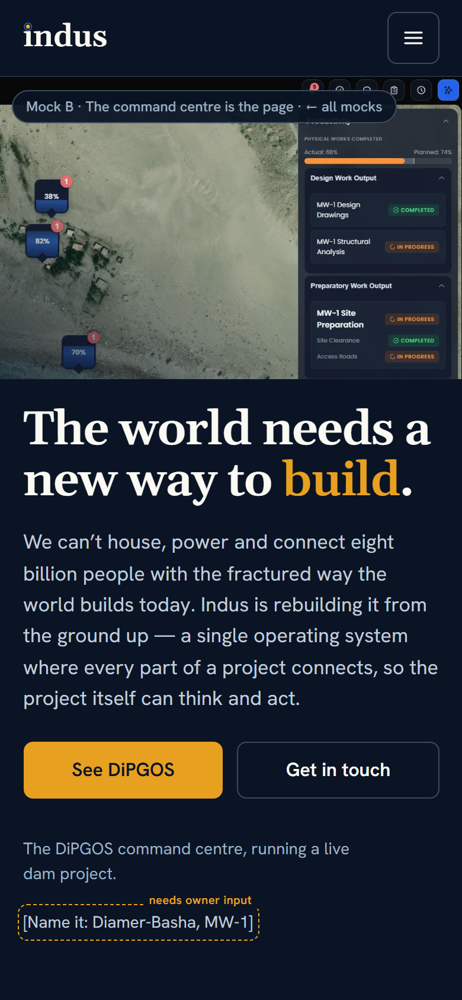
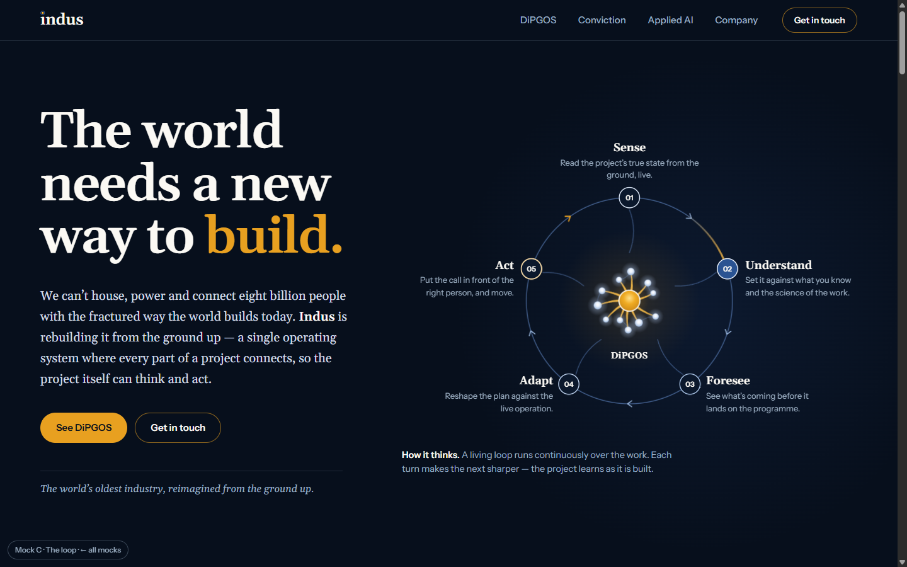
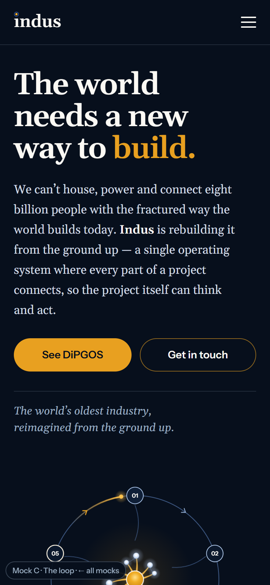
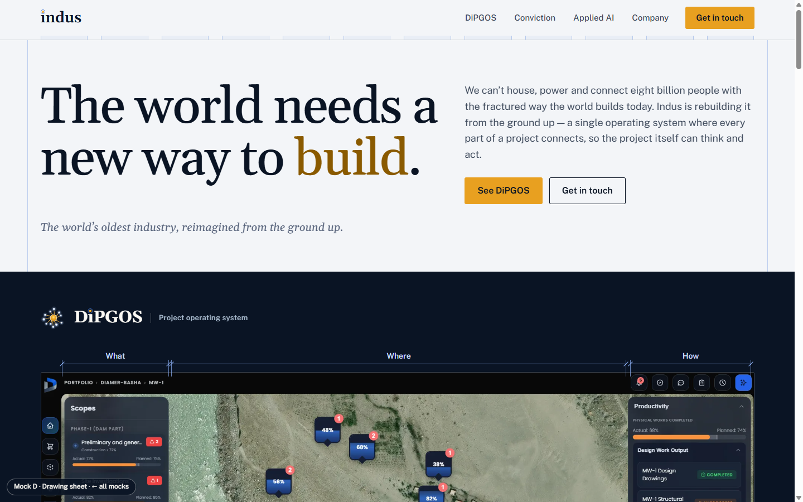
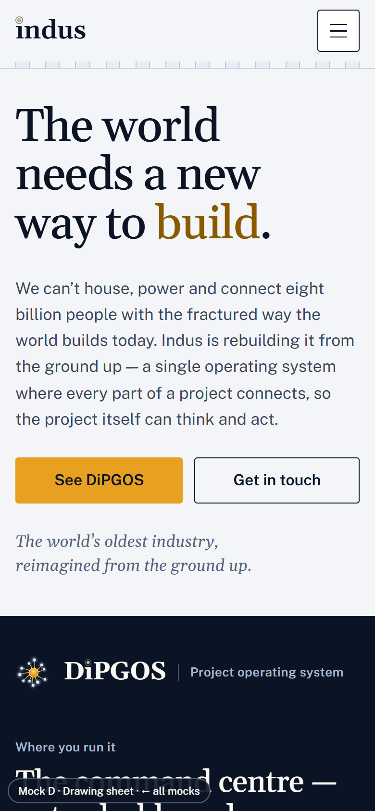

Four directions for industechsol.com
Each mock is a complete, responsive page. They all use the site’s current copy and fix everything in the design audit. They differ in layout, page order, typography and the one signature element. Open each on a desktop and on a phone. Choose one direction, or mix parts of them (see the end of this page), and it gets built into the real site.
View them through the local server (npm run serve, then /docs/redesign-mocks/). Opening the files directly also works, but the web fonts need a network connection. Anything outlined with an amber dashed border and marked “needs owner input” is a placeholder, not a fact.
Mock A · Proof up front


The evolution
Today’s site with the audit fixed. The one real change is that the product shows up in the first screen.
- Signature
- A readable crop of the command centre enters from the right and bleeds off the edge
- Order
- Unchanged: Hero · Conviction · DiPGOS · AI · Company · Contact
- Type
- Gelasio + Schibsted Grotesk
- Loop
- Ring of five stations with an amber return arc (a list on phones)
- Lowest risk, and the fastest to build from today’s code
- Visitors who know the current site will recognise it
- The least distinctive of the four
- The manifesto still comes before the full product explanation
Open mock A
Mock B · The command centre is the page


Show, then argue
The product is the hero. A sticky, annotated walkthrough explains it region by region, and only then does the page make its case.
- Signature
- Sticky screenshot. Each step outlines its region in the product’s signal blue and dims the rest
- Order
- Product · Walkthrough · Loop · Functions · Why (Conviction) · AI · Company · Contact
- Type
- Gelasio + Hanken Grotesk
- Loop
- Racetrack band with a return lane
- The strongest proof: a buyer sees the real system within 0.1 screens
- The walkthrough turns a dense screenshot into something people can follow
- The longest page (12.4 screens on a phone)
- It depends entirely on one screenshot. A second product view would help
- Which regions steps 4 and 5 point at is a guess and needs confirming
Open mock B
Mock C · The loop


Editorial long-read
The idea leads. The loop grows out of the DiPGOS mark in the hero, and the page reads like a considered essay set in Gelasio.
- Signature
- A hub-and-ring loop built from the brand mark, with one highlight travelling round it
- Order
- Hero (loop) · DiPGOS · Conviction · AI · Company (a signed founder statement) · Contact
- Type
- Gelasio for body text too; Instrument Sans for UI only
- Loop
- It is the hero
- The most ownable image: the mark and the method become one picture
- The founder statement gives the Company section a human voice
- The product only appears after 1.9 screens on desktop and 2.7 on a phone
- Serif body text is slower to scan for busy readers
- The desktop margin rail sits empty in places
Open mock C
Mock D · Drawing sheet


Engineering drawing, light
It speaks the audience’s own visual language: a flowchart for the loop, a hatched section-cut for the AI stack, and a drawing title block as the footer.
- Signature
- Construction-drawing vernacular, with dimension lines marking What / Where / How on the product
- Order
- Hero · Command centre · DiPGOS · Conviction · AI · Company · Contact
- Type
- Gelasio + Public Sans, with tabular figures
- Loop
- Process flow with a return line from Act to Sense
- The most distinctive direction. Engineers read it as “made by people like us”
- The shortest page on desktop (8.1 screens)
- The biggest break from the current brand: light instead of dark
- The brand assets were drawn for dark backgrounds, so the mark sits on an ink tile
- The most work to build
Open mock D
Side by side
| Today | A · Proof up front | B · Command centre | C · The loop | D · Drawing sheet |
|---|
| Product first seen, desktop | 4.9 screens | 0.1 | 0.1 | 1.9 | 0.7 |
|---|
| Product first seen, phone | 6.5 screens | 0.6 | 0.1 | 2.7 | 1.3 |
|---|
| Page length, desktop | 9.2 screens | 9.4 | 10.5 | 8.7 | 8.1 |
|---|
| Page length, phone | 10.8 screens | 11.3 | 12.4 | 11.7 | 11.1 |
|---|
| Theme | Dark | Dark | Dark + signal blue | Deeper dark | Light sheet, ink bands |
|---|
| Body typeface | Arial | Schibsted Grotesk | Hanken Grotesk | Gelasio (serif) | Public Sans |
|---|
| Build effort from today | — | Small | Large (scroll logic, crops) | Medium (diagram, rail) | Large (new theme, diagrams) |
|---|
Screens are measured at 1440×900 and 390×844. Every mock is longer on phones than today, because the command centre is now shown as three readable crops instead of one thumbnail. Trimming that is part of the build, whichever direction you choose.
Fixed in every mock
- One container, so the nav, hero, sections and footer share the same edges. Paragraphs run about 65 characters or fewer at every width.
- Solid amber appears only on buttons. Amber highlighted words appear only in the hero and contact headlines.
- One small label style, with no numbered eyebrows or ghost numerals. Numbers are kept only on the five loop steps.
- The loop is drawn as a cycle, and the AI layers are drawn as a stack that rests on its base.
- The command centre is readable on a 390px phone, UI text is never cropped, and the markers tie Where / What / How to the image.
- The contact address shows as text and has a Copy button (the page script still assembles it, so it never appears in the source). There’s one Email us button, and Get in touch is used everywhere else.
- The nav highlight clears on the hero and contact sections. The mobile menu is opaque. No wrapping text has a line-height of 1.
- Sentence case and UK spelling throughout. Duplicate labels and the extra taglines are gone. Otherwise the copy is today’s, word for word.
Mixing is allowed
The signatures are independent. These combinations would work:
- A + C’s loop. Today’s structure with the product up front, and the brand-mark loop as the centrepiece of the DiPGOS section.
- B + D’s section-cut and title block. The product-led walkthrough, with the drawing diagrams kept on the dark theme.
- Any mock + C’s founder statement. It works in every layout.
Needs your input, whichever you pick
- Diamer-Basha: can the project be named? It already appears in the screenshot’s breadcrumb.
- Company facts: years, number of projects, flagship project, offices. Every fact in the mocks is a bracketed placeholder.
- Spelling: the mocks use UK English (“centre”, “programme”, “civilisation”). Say if you want US English.
- Mock B only: confirm which parts of the screen “Action & command” and “Decision intelligence” live in.